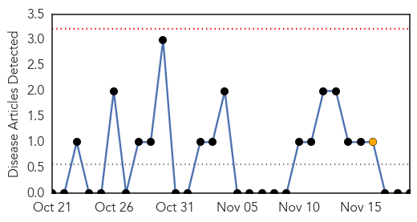

Chikungunya
30-Day Web Trend
0 alerts, 1 warnings

30-Day Twitter Trend
0 alerts, 0 warnings

Article Locations

Article Confidences

Top Articles:
-
No articles found for Nov 19, 2015
Top Tweets:
-
No tweets found for Nov 19, 2015
Unknown
30-Day Web Trend
1 alerts, 0 warnings

30-Day Twitter Trend
0 alerts, 0 warnings

Article Locations

Article Confidences

Top Articles:
- 0.973
- Zika Virus Feared To Cause Newborn Deformities Spreads In South America And The Caribbean
- 0.930
- CDC Update: Chipotle-Linked E. Coli Outbreak Case Count Now At 45
- 0.917
- Nassau County To Kick Off No-Cost Flu Vaccines Drive To Prevent Illness During The Holiday Season
- 0.902
- New Resistant Superbug Spreading
- 0.901
- Here is everything you need to know about Human Papilloma Virus
- 0.871
- Looking for Winter Cold and Flu Remedies? Indian Food Can Be The Solution
- 0.857
- Study Finds New STD, CDC Sees Rise in Diseases Being Transmitted
- 0.850
- Portiuncula revamp will help tackle Galway hospital crisis
- 0.809
- Mobile options now available for flu prevention - azfamily.com 3TV
- 0.787
- Chipotle re-opens restaurants as outbreak investigation continues
- 0.784
- STD rates rise, especially among men
- 0.784
- STD rates rise, especially among men
- 0.776
- News from Delaware State Government Agencies
- 0.764
- ‘HIV viral load can be undetectable’
- 0.755
- South Sudan: MSF sees dramatic increase of patients in Malakal's UN site as living conditions jeopardise health of thousands
- 0.731
- Dallas County offering free flu shots for uninsured - Story
- 0.726
- The Level of STD Cases in Country Has Now Reached Epidemic Proportions
- 0.672
- African Researchers promises to end neglected diseases
- 0.647
- AIDS claims 302 lives; nearly 4500 infected in J&K
- 0.645
- ‘World powers betrayed the spirit of Nuremburg’
- 0.645
- Fears of French-style Patriot Act in wake of Paris attacks
- 0.645
- Fate of suspected Paris attacks 'architect' unknown
- 0.642
- American teenager among victims of deadly West Bank attacks
- 0.640
- Dangerous Bacteria in Oysters and Raw Fish Has Killed 13 People and Sickened 42 More
- 0.613
- Over 3 million risk kidney disease globally
- 0.597
- One day only: Uber to roll out, deliver flu shots today
- 0.597
- Uber delivering flu shots Thursday
- 0.597
- 2nd person says Yellowknife hospital failed to treat lung infection
- 0.594
- Utica schools, health leaders warn parents of TB case
- 0.585
- Health Officials Concerned About More Cases of Syphilis In Oregon
- 0.559
- Vision loss at Washim camp: NHRC seeks report on cataract surgeries
- 0.553
- Bird flu sparks culling fears, Business, Phnom Penh Post
- 0.550
- Poor sanitation puts millions of children at risk of disease: UNICEF
- 0.550
- Science Says Super Bacteria Coming to Kill Us Is Imminent, "People Will Die"
- 0.545
- Media Release: Health providers take to the streets for paid sick days on November 19
- 0.538
- Le PTCI – que prévoit-il pour les partenaires sociaux? Le CESE a annoncé un dialogue constructif avec les partenaires sociaux
- 0.538
- Health and safety precautions for power outages and floods
- 0.536
- Scientists warn that superbugs discovered in China are resistant to antibiotics
- 0.531
- Storm brews in Hlotse as town goes three months without portable water
- 0.529
- MSF Treats 60 People Wounded in Grenade Explosions
- 0.526
- Nation Home
- 0.524
- Malaria Parasite P. Vivax (Plasmodium vivax)
- 0.514
- Utica High School student has tuberculosis, officials working to identify those who had contact
- 0.505
- Utica High School student tests positive for tuberculosis
- 0.505
- Superbugs 'are now resistant to ALL drugs and antibiotic defences'
- 0.501
- WHO issues warning over Ethiopia climate change risks
Top Tweets:
- 0.661
- RT: haiti fraudes électorales-Un sondage de sortie des urnes met en doute les résultats préliminaires officiels https://t.c…